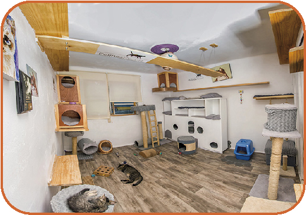

Hospedaje Individual

Tu gato disfrutará de suites amplias, luminosas, climatizadas y acogedoras con todas
las comodidades a su disposición. En caso que la familia tenga más de un gato, pueden
compartir la habitación y se asignará el tamaño de suite adecuada según la cantidad
de mininos (Suite Familiar).
Balcón privado
La luz natural y el aire libre de los balcones, estimula muchísimo los sentidos de tu michi.
Le permite entretenerse, disfrutar del sol, aromas y bellas vistas verdes.
Adaptadas para gatos
Zonas elevadas de diferentes alturas, refugios, cuevas, escondite para manejar el estrés,
juguetes, rascadores de cartón y entretenimiento. (Pueden traer pertenencias con su olor).
Amoblamiento como en casa
Algunas suites tienen hasta cama de humanos / cunas de bebé para que se sientan como en casa.
Platos de comida, camitas y areneros a elección
Hospedaje Compartido

Espacio Gatos es un verdadero RESORT NATURAL FELINO. Ofrecemos un entorno privilegiado,
lleno de luz y verde natural. El espacio compartido les permite a los huéspedes interactuar
con otros gatos, personas y estimular sus sentidos.
Contamos con dos espacios compartidos independientes:
«GREEN PARK» con un frondoso JARDÍN y “SELVA IGUAZÚ” con CATIO (cat + patio) lleno de verde
natural y cascada de piedra natural.
Garantizamos grupos pequeños de 10 gatos promedio en cada SECTOR, por ello somos un
verdadero Hotel Boutique.
Estadia Diaria

signamos una suite individual al húesped, exclusiva para él durante toda la estadía, pero
con posibilidad de salir e integrarse. Nosotros nos encargamos de ir viendo cuando está
listo o cuando quiere salir y le hacemos la adaptación a otros michis. Por las noches los
llevamos siempre a su suite para controlar al día siguiente si hizo caca, pis, si comió etc.
Y según su necesidad y gusto, lo dejamos más o menos horas del día en la suite o en el lugar compartido.
Según como la familia y nosotros veamos al gato, la próxima estadía ya sabremos si a al michi le sienta mejor
la estadía en suite o lugar compartido o la modalidad mixta.
Para la modalidad mixta, el precio a pagar es el de la suite individual y los requisitos sanitarios
son los de “espacio compartido”.